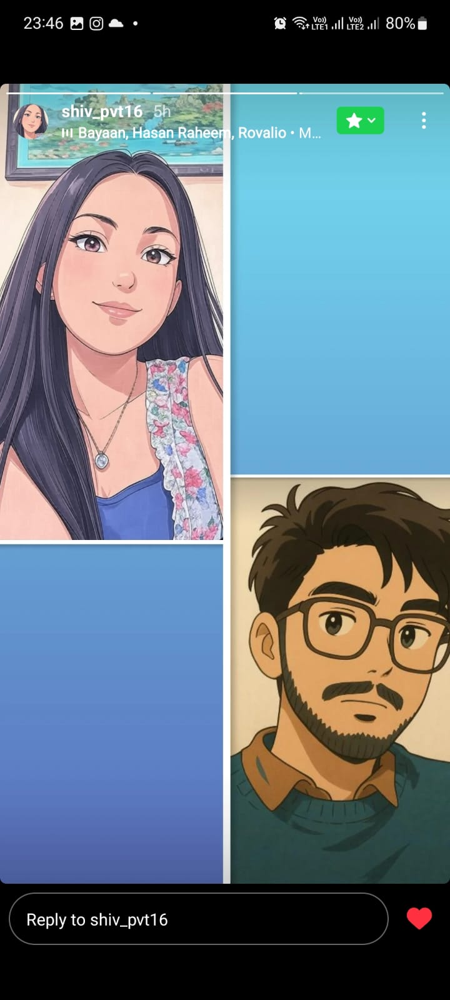

These memories... they make me miss you even more ❤️
Though we have only met once, our hearts were always meant for each otherüíï.

Do you even know how much I miss you?
I miss you...
0
times every moment
These memories... they make me miss you even more ❤️
Though we have only met once, our hearts were always meant for each otherüíï.